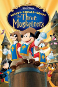
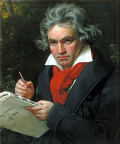
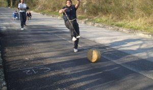

Deze film is al een tijdje oud, dat betekend pure nostalgie. De vrienden Mickey, Donald en Goofy dromen ervan Musketier te worden. Hun leven verandert als Boris Boef, leider van de Musketiers, en zijn luitenant Clarabella hen gebruiken om prinses Minnie van de troon te stoten, de enige muis die Boris nog in de weg staat. Mickey, Donald en Goofy lijken misschien geen helden, maar hebben een verrassing voor Boris. Door teamwork en vriendschap staan ze sterk.
 De 3 MusketiersEen van de bekendste componist alle tijden alhoewel hij blind was. Beethoven werd uiteindelijk doof, hoewel hij zijn gehoorverlies al in zijn midden twintig begon te merken en het proces zich geleidelijk voltrok. Hij compenseerde dit verlies door zich meer te richten op trillingen, bewegingen en visuele aspecten van het componeren, en door te werken met conversatieboekjes voor communicatie in de latere stadia. De precieze oorzaak van zijn doofheid blijft een mysterie, hoewel moderne analyses wijzen op factoren zoals loodvergiftiging.
 Hier wat meer informatie over Beethovenje zou het niet denken, maar er is een beroemd, officieus kampioenschap kaasrollen in Gloucestershire, Engeland, bij de Cooper's Hill Cheese-Rolling and Wake, waar deelnemers achter een rollende kaas aan rennen. Er is ook een Nederlands Kampioenschap Kaasrollen, dat jaarlijks in Haastrecht plaatsvindt tijdens de Proeverij
 hier wat meer informatie